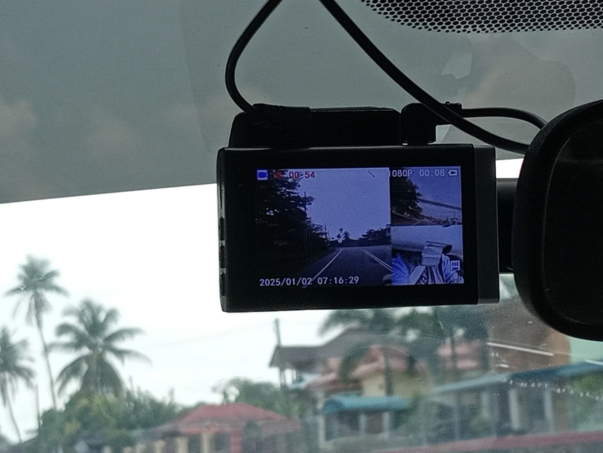
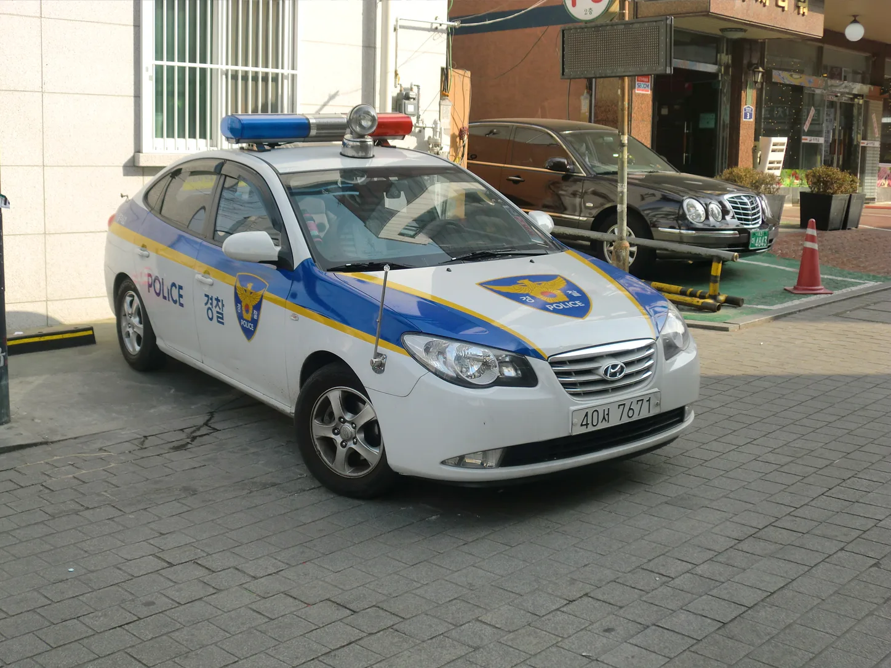
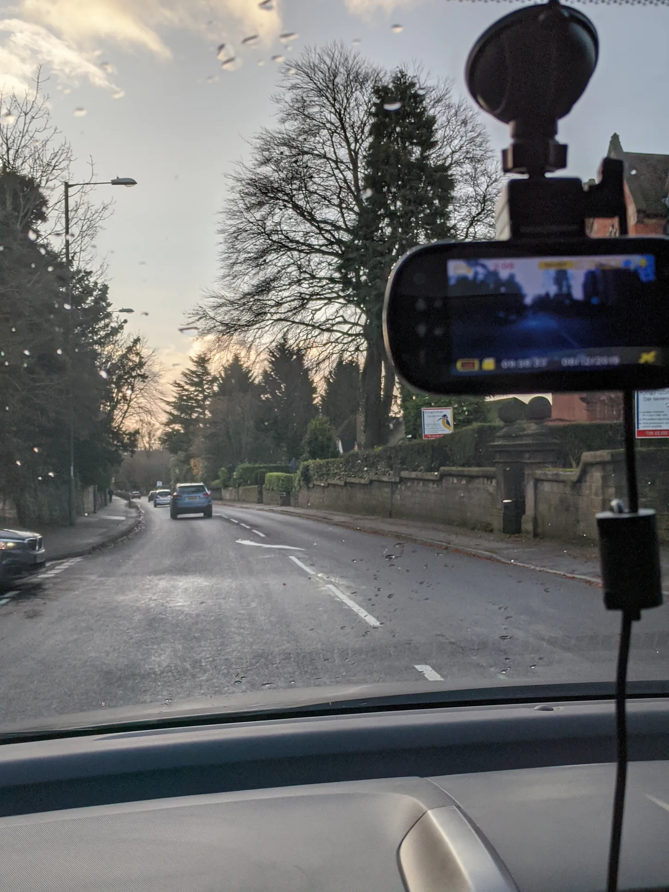
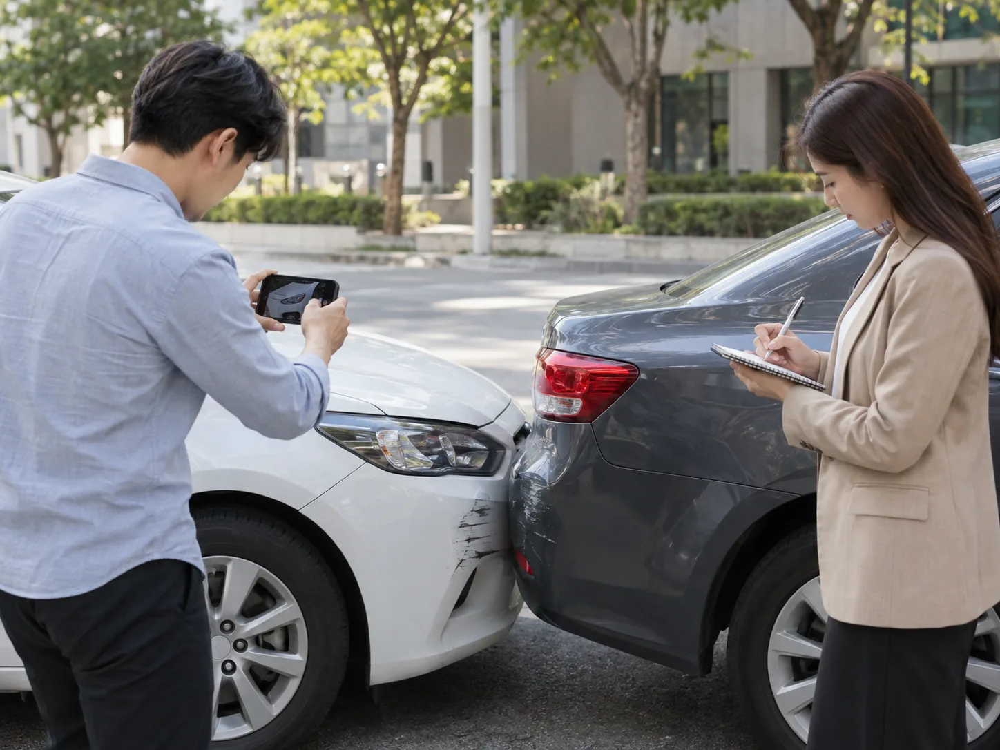

▲ 블랙박스에 사고 장면이 찍혔다고 저절로 증거가 되는 것은 아니다 — 제출 절차를 알아야 한다 ⓒ CarPrism
블랙박스에 사고 장면이 또렷하게 찍혔다고 안심하는 운전자가 많다. 하지만 영상을 가지고만 있는 것과 증거로 제출하는 것은 전혀 다른 문제다.
어디에, 어떤 절차로, 어떤 형태로 넘기느냐에 따라 같은 영상도 결정적 증거가 되기도 하고 참고자료에 그치기도 한다.
이 글은 저장매체 관리법이 아니라 실제 제출 방법을 다룬다. SD카드 수명·포맷 관리는 별도로 다뤘으니, 여기서는 사고 현장 신고부터 형사고소까지 영상을 넘기는 절차에 집중한다.
1. 증거로 인정받으려면 — 저장이 아니라 '무결성'이 핵심
블랙박스 영상은 형사·민사 재판 모두에서 활용되는 디지털 증거다. 다만 디지털 증거는 조작 가능성이 늘 문제로 지적되기 때문에, 법원과 수사기관은 영상의 무결성(원본과 동일함)을 까다롭게 따진다.
| 원칙 | 내용 |
|---|---|
| 원본 보존 | 제출은 사본으로, 원본 SD카드·파일은 본인이 별도 보관 |
| 편집 금지 | 일부 구간만 자르거나 화질을 조정하면 조작 의심을 살 수 있음 — 요청 범위 전체를 그대로 제출 |
| 메타데이터 유지 | 촬영 일시·GPS 등 파일 정보(메타데이터)가 살아 있어야 신뢰도가 높아짐 |
📍 법적으로 '제출 의무'는 없다
블랙박스 영상을 강제로 제출해야 할 법적 의무는 원칙적으로 없다. 다만 수사기관이 압수수색영장을 발부받으면 상황이 달라진다 — 이 경우 제출을 거부할 수 없다. 임의 제출은 어디까지나 사고 처리를 유리하게 만들기 위한 선택이라는 점을 알아두면 절차를 이해하기 쉽다.
2. 사고 현장 신고 시 제출 절차 — 112부터 출동 경찰까지
사고 직후 대응 순서가 이후 영상 활용도를 결정한다. 부상자가 있으면 즉시 112(경찰)·119(구급)에 신고부터 하는 게 우선이다.
✅ 현장에서 해야 할 것
· 블랙박스 전원을 끄지 말 것 — 사고 직후 정황까지 계속 녹화되는 편이 유리함
· 출동한 경찰에게 블랙박스 장착 사실과 영상 확보 여부를 먼저 고지
· 경찰 도착 전이라도 영상 파일을 스마트폰 등으로 별도 백업 — 상시 녹화형은 시간이 지나면 자동으로 덮어씌워짐
· 상대방·목격자 블랙박스가 있다면 연락처를 반드시 교환해 추후 영상 확보 경로를 열어둘 것

▲ 사고 신고 시 출동한 경찰관에게 블랙박스 영상 확보 사실을 먼저 알려야 이후 절차가 빨라진다 ⓒ CarPrism
경찰 조사 단계에서 영상을 제출할 때는 경찰서 방문 제출 또는 담당 수사관 안내에 따른 파일 전달이 일반적이다. 최근에는 디지털 증거 제출용 저장매체(USB 등)를 요구하는 경우가 많으므로, 사본을 별도 매체에 담아두면 절차가 수월하다.
📍 상대방에게 직접 보내지 않는다
메신저나 이메일로 상대 운전자에게 영상을 직접 전달하는 것은 권장되지 않는다. 전달된 영상이 어디로 다시 공유되는지, 편집되는지 확인할 방법이 없기 때문이다. 경찰·보험사의 공식 접수 경로를 거치는 편이 안전하다.
3. 정식 수사 요청 시 — 상대 차량 블랙박스까지 확보하는 법
과실 다툼이 있거나 상대방이 발뺌하는 경우, 경찰에 정식 수사를 요청할 수 있다. 이때는 내 블랙박스뿐 아니라 상대 차량의 블랙박스 영상도 핵심 증거가 된다.
✅ 정식 수사 요청 시 챙길 것
· 경찰 접수 시 "상대 차량 블랙박스 영상 보전 요청"을 명시적으로 남길 것 — 상대가 임의로 영상을 삭제·포맷하는 것을 막는 절차
· 상대가 임의 제출을 거부하면 경찰은 압수수색영장을 통해 강제로 확보할 수 있음
· 목격 차량·인근 상가 CCTV 등 제3자 영상도 함께 확보 요청이 가능
· 수사 진행 상황은 사건 접수번호로 조회할 수 있으므로 접수 시 반드시 확인
형사사건으로 넘어가는 경우, 수사기관은 제3자가 가진 영상 제출을 요청할 수 있는 권한을 갖는다. 법적 강제력은 영장이 있을 때 발생하지만, 실무적으로는 임의 제출 요청 단계에서 대부분 해결되는 경우가 많다.

▲ 정식 수사에서는 내 차량뿐 아니라 상대 차량의 블랙박스 영상 보전 요청도 함께 해두는 것이 중요하다 ⓒ CarPrism
4. 보험사·손해보험협회 제출 방법 — 어디로, 어떻게 보내나
보험 처리를 위한 영상 제출은 대부분 보험사 다이렉트 앱·홈페이지를 통해 이루어진다. 사고 접수 시 상담원이 안내하는 업로드 절차를 따르면 된다.
| 목적 | 제출 경로 | 비고 |
|---|---|---|
| 사고 접수·과실 다툼 | 가입 보험사 다이렉트 앱·홈페이지 업로드 | 일부 사는 AI 과실판정 시스템으로 자동 분석(예: DB손보, 5초 내 결과) |
| 보험사기 의심 신고 | 금융감독원 보험사기신고센터(fss.or.kr, 전화 1332) 또는 가입 보험사 신고센터 | 촬영 장소·제보자 인적사항 함께 제출, 신원은 비밀 보장 |
| 여러 보험사 비교·상담 | 손해보험협회 운영 보험다모아 | 직접 영상 제출 창구는 아니며, 가입 전 보험료·특약 비교용 |
| 교통법규 위반 제보 | 안전신문고 앱·홈페이지 | 위반 전후 10~20초 분량으로 편집해 제출, 시간 표시 없는 영상은 반려 |
여러 보험사의 특약·할인 조건을 한 번에 비교하려면 손해보험협회가 운영하는 공적 비교 창구를 이용할 수 있다. 보험다모아 바로가기
📍 AI 과실판정, 참고자료일 뿐 최종 결정은 아니다
DB손해보험은 2026년 6월 업계 최초로 블랙박스 영상활용 AI 과실판정 시스템을 열었다. 2024년 9월부터 약 20개월간 약 7만 건의 사고 데이터를 학습시켜 평균 정확도 92.4%를 확보했고, 현재는 차대차 사고 유형을 중심으로 제공된다. 다만 이는 참고용 1차 분석이며, 최종 과실비율은 손해사정과 협의·분쟁조정 절차를 거쳐 확정된다.
5. 뺑소니 등 형사고소에 활용하는 법
뺑소니(도주치상·도주치사)처럼 형사 처벌이 걸린 사건에서는 블랙박스 영상의 역할이 더 커진다. 가해 차량을 특정하지 못하면 수사 자체가 진전되지 않기 때문이다.
✅ 뺑소니 사건에서 영상이 하는 역할
· 차량 번호판·차종·색상 식별 — 도주 방향까지 확인되면 인근 CCTV·경찰 수배와 연계 가능
· 사고 경위 입증 — 신호위반·중앙선 침범 등 가해자의 과실을 영상으로 직접 증명
· 고소장 첨부 증거로 활용 — 고소 접수 시 영상 사본을 증거자료로 함께 제출
· 본인 블랙박스에 안 잡혔다면 인근 상가·아파트 CCTV, 목격 차량 블랙박스 확보를 경찰에 요청

▲ 사고 경위를 다투는 사건일수록 파손 부위·현장 사진과 블랙박스 영상이 결정적 증거가 된다 ⓒ CarPrism
고소 절차는 통상 관할 경찰서 형사과(교통조사계) 방문 접수로 진행된다. 이때 영상 원본 파일 목록, 촬영 일시, 촬영자 정보를 함께 정리해 제출하면 수사관이 영상을 검토하는 시간을 줄일 수 있다.
📍 변호사 상담이 필요한 경우
뺑소니 혐의를 받는 입장이거나, 반대로 가해자를 특정하기 어려운 사건이라면 구체적 절차는 사안마다 달라진다. 형사 절차가 얽힌 경우 교통사고 전문 변호사 상담을 통해 증거 제출 시점과 범위를 조율하는 것이 안전하다.
6. 제출 전 원본 보존 — 놓치기 쉬운 마지막 확인
제출 준비 과정에서 가장 흔한 실수는 '원본을 그대로 넘겨서 더 이상 손에 남은 사본이 없는 것'이다. 제출은 항상 사본으로, 원본은 별도 저장 장치에 분리 보관해야 한다.
✅ 제출 직전 마지막 점검
· 요청받은 시간대 전체를 빠짐없이 포함했는지 확인 (사고 전후 5~10분 여유 있게)
· 파일명을 임의로 바꾸지 말고, 필요하면 별도 메모로 촬영 일시·장소를 부기
· 제출 후에도 원본은 최소 사건 종결 시점까지 보관 — 상시 녹화형 블랙박스는 자동 삭제되므로 별도 백업 필수
· 제출 이력(전송 일시, 담당자, 접수번호)을 캡처·기록으로 남겨둘 것
블랙박스 SD카드 자체의 수명 관리나 포맷 주기 같은 저장매체 관리 문제는 이 글의 범위를 벗어난다. 촬영·보관 단계에서 영상이 끊기지 않게 하는 방법은 별도로 다루고 있으니, 여기서는 이미 확보된 영상을 어떻게 제출하느냐에 집중했다는 점을 다시 강조한다.
7. 요약
블랙박스 영상은 저장만 해둔다고 증거가 되는 게 아니다. 원본을 그대로, 편집 없이, 사본으로 제출한다는 원칙을 지켜야 증거능력이 인정된다.
상황별로 제출 경로가 다르다. 사고 현장에서는 출동 경찰에게 즉시 고지, 정식 수사에서는 상대 차량 블랙박스까지 보전 요청, 보험 처리는 보험사 앱, 보험사기 의심은 금융감독원 보험사기신고센터(전화 1332)나 가입 보험사 신고센터를 이용한다.
뺑소니 등 형사고소에서는 영상이 결정적 증거가 된다. 차량 특정과 과실 입증에 핵심 역할을 하므로, 고소장 접수 시 영상 사본과 촬영 정보를 함께 정리해 제출하는 것이 좋다. 원본은 사건 종결 시점까지 별도로 보관해야 한다.